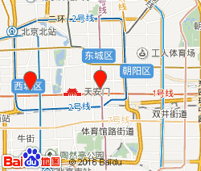

[东院]北京市东城区帅府园一号 北京西城区大木仓胡同41号
http://www.pumch.cn/
东院咨询台：010-69155564;西院咨询台：010-65482244
东院：106，102，205，154，305路到东单路口北； 东院：106，102，205，154，305路到东单路口北； 东院：106，102，205，154，305路到东单路口北； 东院：106，102，205，154，305路到东单路口北； 东院：106，102，205，154，305路到东单路口北。
